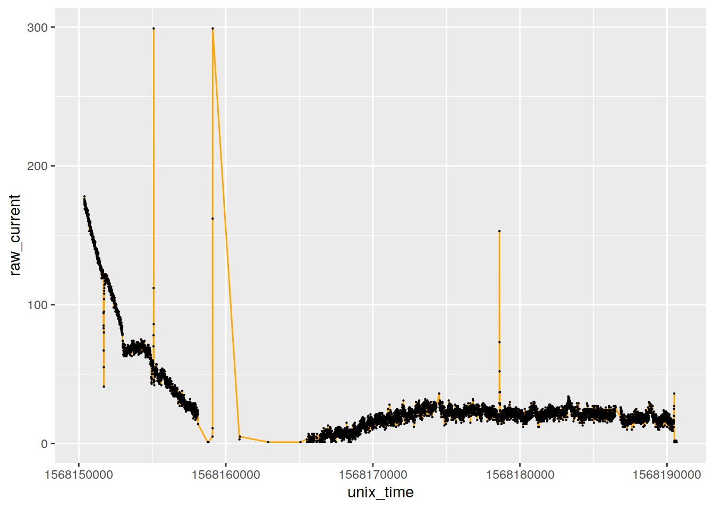
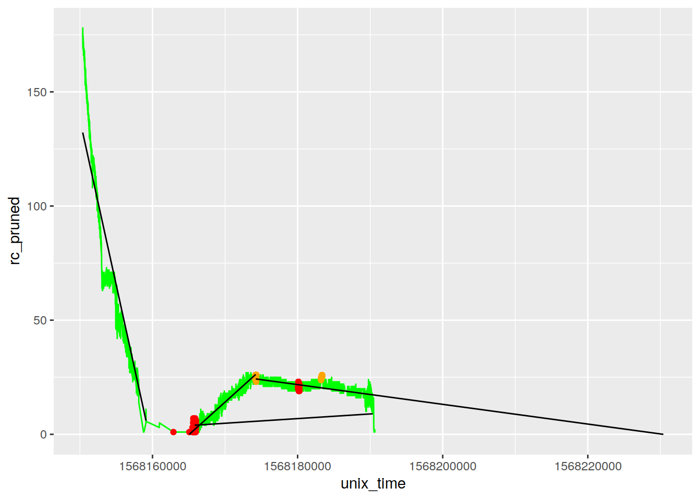

Summary For Single Sheet
Dennis Wollersheim
12.03.2020
Last updated: 2020-04-06
Checks: 6 1
Knit directory: analysis/
This reproducible R Markdown analysis was created with workflowr (version 1.4.0.9001). The Checks tab describes the reproducibility checks that were applied when the results were created. The Past versions tab lists the development history.
The R Markdown file has unstaged changes. To know which version of the R Markdown file created these results, you’ll want to first commit it to the Git repo. If you’re still working on the analysis, you can ignore this warning. When you’re finished, you can run wflow_publish to commit the R Markdown file and build the HTML.
Great job! The global environment was empty. Objects defined in the global environment can affect the analysis in your R Markdown file in unknown ways. For reproduciblity it’s best to always run the code in an empty environment.
The command set.seed(20200312) was run prior to running the code in the R Markdown file. Setting a seed ensures that any results that rely on randomness, e.g. subsampling or permutations, are reproducible.
Great job! Recording the operating system, R version, and package versions is critical for reproducibility.
Nice! There were no cached chunks for this analysis, so you can be confident that you successfully produced the results during this run.
Great job! Using relative paths to the files within your workflowr project makes it easier to run your code on other machines.
Great! You are using Git for version control. Tracking code development and connecting the code version to the results is critical for reproducibility. The version displayed above was the version of the Git repository at the time these results were generated.
Note that you need to be careful to ensure that all relevant files for the analysis have been committed to Git prior to generating the results (you can use wflow_publish or wflow_git_commit). workflowr only checks the R Markdown file, but you know if there are other scripts or data files that it depends on. Below is the status of the Git repository when the results were generated:
Ignored files:
Ignored: analysis/figure/
Ignored: data/
Ignored: explore/
Unstaged changes:
Modified: analysis/process_all_sheets.Rmd
Modified: analysis/process_one_sheet.Rmd
Modified: docs/results_summary.csv
Note that any generated files, e.g. HTML, png, CSS, etc., are not included in this status report because it is ok for generated content to have uncommitted changes.
These are the previous versions of the R Markdown and HTML files. If you’ve configured a remote Git repository (see ?wflow_git_remote), click on the hyperlinks in the table below to view them.
| File | Version | Author | Date | Message |
|---|---|---|---|---|
| Rmd | ac9c1db | Dennis Wollersheim | 2020-03-29 | documentation |
| html | ac9c1db | Dennis Wollersheim | 2020-03-29 | documentation |
| Rmd | f518a15 | Dennis Wollersheim | 2020-03-29 | Calculate area under parabola based on loess |
| Rmd | 25c57ae | Dennis Wollersheim | 2020-03-29 | Clarified variables, rebased parabola |
| Rmd | ead13f7 | Dennis Wollersheim | 2020-03-19 | 1000 moh limit, print numbers |
| html | 426eed6 | Dennis Wollersheim | 2020-03-19 | Build site. |
| Rmd | be688d9 | Dennis Wollersheim | 2020-03-19 | wflow_publish(“analysis/process_all_sheets.Rmd”) |
| html | be688d9 | Dennis Wollersheim | 2020-03-19 | wflow_publish(“analysis/process_all_sheets.Rmd”) |
| html | dc06120 | Dennis Wollersheim | 2020-03-15 | Build site. |
| Rmd | fbbadf4 | Dennis Wollersheim | 2020-03-15 | wflow_publish(“analysis/process_one_sheet.Rmd”) |
FILE: test SHEET: P0051_Aug_26_S1_right SHEET_N: 1
replace outliers with mean of neigbouring points
smoothing_window_width = 500
inflection_window_width = 50
df_in %>%
mutate(rc_pruned = ifelse( row_n %in%
findOutliers(df_in$raw_current, n = smoothing_window_width, selectivity = NA, thresholdMin=1, fixedThreshold = TRUE)
,
NA, raw_current)) %>%
mutate( rc_pruned = na.approx( rc_pruned)) %>%
mutate( rc_loess = loess( rc_pruned ~ unix_time, data=., span=.2 ) %>% predict() ) %>%
mutate( mean_left = lag(rollapply(rc_loess, inflection_window_width, mean, align = "right", fill=NA))) %>%
mutate( mean_right = lag(rollapply(rc_loess, inflection_window_width, mean, align = "left", fill=NA))) %>%
mutate( is_max_pt = replace_na( rc_loess > mean_left & rc_loess > mean_right, FALSE)) %>%
mutate( is_min_pt = replace_na( rc_loess < mean_left & rc_loess < mean_right, FALSE)) %>%
{ . } -> df_in_smoothedraw input data
df_in %>%
ggplot(aes( unix_time, raw_current )) +
geom_line( color='orange') +
geom_point( color='black', size=.1)
smoothed data
df_in_smoothed %>%
ggplot(aes( unix_time, rc_pruned )) +
geom_line( color='orange') +
geom_point( color='black', size=.1) +
geom_line( aes( unix_time, rc_loess ), color='green')
smoothed data with additional cleaning
TODO: Kelly, choose one of these 4 cleaning methods to calculate your AUC values. Currently using the first, no cleaning whatsoever
df_in_smoothed %>%
mutate(rc_pruned = tsclean( rc_pruned)) %>%
ggplot(aes( unix_time, rc_pruned )) +
geom_line( color='orange') +
geom_point( color='black', size=.1)
calculating important points
- first min,
- first max after first min,
- location of first min after previous max
df_in_smoothed %>%
mutate( c=chunkify( is_min_pt )) %>%
filter( c==2 ) %>%
summarise( min_location = floor(mean( row_n)), min_raw_current = min(rc_pruned)) %>%
{ . } -> tuple_min_location
min_location = tuple_min_location$min_location
min_raw_current = tuple_min_location$min_raw_current
# caculate the last location, and the last raw_current
last_location = length( df_in_smoothed)
last_raw_current = df_in_smoothed %>% pluck('rc_pruned', last_location )
# max_location - the row at the top of the parabola
df_in_smoothed %>%
filter( row_n > min_location ) %>%
mutate( c = chunkify( is_max_pt )) %>%
filter( c==2) %>%
summarise( max_location = floor(mean( row_n))) %>%
pluck('max_location') %>%
{ . } -> max_location
df_in_smoothed %>%
mutate( is_2nd_min =
(row_n > max_location ) &
(rc_pruned < min_raw_current ) ) %>%
pluck('is_2nd_min') %>%
rle( ) %>%
pluck(1,1) %>%
{ . } -> min_2nd_locationextract out some subset smoothed chunks for fitting prediction lines
df_in_smoothed %>%
dplyr::filter( row_n < min_location ) %>%
mutate(rc_pruned = tsclean( rc_pruned)) %>%
{ . } -> df_min
df_in_smoothed %>%
dplyr::filter( row_n >= min_location ) %>%
dplyr::filter( row_n <=max_location ) %>%
mutate(rc_pruned = tsclean( rc_pruned)) %>%
{ . } -> df_max
df_in_smoothed %>%
dplyr::filter( row_n >= max_location ) %>%
mutate(rc_pruned = tsclean( rc_pruned)) %>%
{ . } -> df_end
df_in_smoothed %>%
dplyr::filter( row_n >= min_location ) %>%
mutate(rc_pruned = tsclean( rc_pruned)) %>%
{ . } -> df_parabola
# parabola endpoints are the minimum at the left and the first minimum on the right
df_parabola %>%
filter( row_n > max_location ) %>%
filter( rc_pruned == min( rc_pruned)) %>%
filter( row_n == min( row_n)) %>%
bind_rows( df_parabola %>% filter( row_n == min( row_n)) ) %>%
arrange(row_n ) %>%
select( rc_pruned, unix_time) %>%
{ . } -> df_parabola_endpoints
fit_min = lm( rc_pruned ~ unix_time, data=df_min)
fit_max = lm( rc_pruned ~ unix_time, data=df_max)
fit_end = lm( rc_pruned ~ unix_time, data=df_end)
# straight line between the parabola endpoints
fit_parabola_base = lm( rc_pruned ~ unix_time, data=df_parabola_endpoints)calculate overall graph parameters to use when generating the new lines
df_in %>%
summarise( min_ts = min(unix_time),
max_ts = max( unix_time ),
n = n(),
range = max_ts - min_ts,
step = range / n,
) %>%
{ . } -> df_parmgenerate the steps along the unix_time scale to generate the new lines
steps_extra = 8000
df_steps_before = tibble( unix_time = df_parm$min_ts - seq( 1:steps_extra ) * df_parm$step,
row_n = 1- 1:steps_extra
)
df_steps_after = tibble( unix_time = df_parm$max_ts + seq( 1:steps_extra ) * df_parm$step,
row_n = df_parm$n+ 1:steps_extra
)
df_in_smoothed %>%
select( unix_time, row_n) %>%
rbind( df_steps_before) %>%
rbind( df_steps_after) %>%
arrange( row_n ) %>%
{ . } -> df_stepsPredict the lines
df_steps %>%
mutate( predicted_parabola_base = predict( fit_parabola_base, .)) %>%
mutate( predicted_min = predict( fit_min, .)) %>%
mutate( predicted_max = predict( fit_max, .)) %>%
mutate( predicted_end = predict( fit_end, .)) %>%
{ . } -> df_steps
#df_steps %>% View
df_steps %>% summary() unix_time row_n predicted_parabola_base predicted_min
Min. :1.567e+09 Min. :-7999 Min. :-204.66 Min. :-2742.6
1st Qu.:1.567e+09 1st Qu.:-2922 1st Qu.: -69.78 1st Qu.:-1536.3
Median :1.567e+09 Median : 2156 Median : 69.08 Median : -294.4
Mean :1.567e+09 Mean : 2156 Mean : 65.83 Mean : -323.5
3rd Qu.:1.567e+09 3rd Qu.: 7233 3rd Qu.: 200.01 3rd Qu.: 876.6
Max. :1.567e+09 Max. :12310 Max. : 334.88 Max. : 2082.9
predicted_max predicted_end
Min. :-595.8 Min. :-385.9
1st Qu.:-173.8 1st Qu.:-134.6
Median : 235.8 Median : 124.2
Mean : 246.0 Mean : 118.1
3rd Qu.: 670.3 3rd Qu.: 368.2
Max. :1092.2 Max. : 619.5 Adjust where parabola_base actually stops (minimum of end, or where it intersects actual raw_current)
# df_in_smoothed %>%
# inner_join( df_steps, by=c('unix_time', 'row_n')) %>%
# arrange( row_n ) %>%
# filter( row_n > min_location ) %>%
# ggplot( ) +
# geom_point(aes( row_n, rc_pruned)) +
# geom_line( aes( row_n, predicted_parabola_base))
df_in_smoothed %>%
inner_join( df_steps, by=c('unix_time', 'row_n')) %>%
arrange( row_n ) %>%
filter( (row_n > max_location & predicted_parabola_base >= rc_pruned) |
row_n == max( row_n)) %>%
filter( row_n == min( row_n )) %>%
pluck( 'row_n' ) %>%
{ . } -> predicted_parabola_base_endpredict the area under the three predicted base lines (from left to right: min, max and end)
# pull out the AUC size of the triangles
df_steps %>%
filter( predicted_min > 0 & row_n >= min_location ) %>%
summarise( area = trapz( unix_time, predicted_min) ) %>%
pluck('area') %>%
{ . } -> area_min_triangle
df_steps %>%
filter( predicted_max > 0 & row_n <= min_location ) %>%
summarise( area = trapz( unix_time, predicted_max) ) %>%
pluck('area') %>%
{ . } -> area_max_triangle
df_steps %>%
filter( predicted_end > 0 ) %>%
filter( unix_time >= df_parm$max_ts ) %>%
summarise( area = trapz( unix_time, predicted_end) ) %>%
pluck('area') %>%
{ . } -> area_end_trianglecalculate the main parabola AUC for raw, pruned, loess smoothed and time series cleaned
# the real, raw measurements. TODO: should smooth this a bit
df_in %>%
filter( row_n >= min_location ) %>%
summarise( area = trapz( unix_time, raw_current) ) %>%
pluck('area') %>%
{ . } -> area_uc_full_raw
# AUC for smoothed data
df_in_smoothed %>%
filter( row_n >= min_location ) %>%
summarise( area = trapz( unix_time, rc_pruned) ) %>%
pluck('area') %>%
{ . } -> area_uc_full_smoothed
# AUC for smoothed data loess
df_in_smoothed %>%
filter( row_n >= min_location ) %>%
summarise( area = trapz( unix_time, rc_loess) ) %>%
pluck('area') %>%
{ . } -> area_uc_full_loess
# AUC for smoothed data cleaned
df_in_smoothed %>%
filter( row_n >= min_location ) %>%
mutate( rc_pruned = tsclean( rc_pruned)) %>%
summarise( area = trapz( unix_time, rc_pruned) ) %>%
pluck('area') %>%
{ . } -> area_uc_full_cleaned
# the upper bit of the real raw measurement
df_in_smoothed %>%
filter( row_n >= min_location & row_n <= min_2nd_location ) %>%
summarise( area = trapz( unix_time, rc_pruned) ) %>%
pluck('area') %>%
{ . } -> area_uc_upper
# to get upper bit, need to subtract the rectangle below
# calculate rectangle height by width
library(magrittr)
df_in_smoothed[ min_2nd_location, 'unix_time'] %>%
subtract( df_in[ min_location, 'unix_time'] ) %>%
multiply_by( min_raw_current ) %>%
unlist() %>%
{ . } -> rectangle_area
area_uc_parabola_base = -1
area_uc_parabola = -1
try( {
# the upper bit above the parabola base, down to x axis
df_in_smoothed %>%
# filter start and end locations along xaxis
filter( row_n >= min_location & row_n <= predicted_parabola_base_end ) %>%
summarise( area = trapz( unix_time, rc_pruned) ) %>%
pluck('area') %>%
{ . } -> area_uc_parabola
# below parabola base, down to x axis
df_steps %>%
# filter start and end locations along xaxis
filter( row_n >= min_location & row_n <= predicted_parabola_base_end ) %>%
summarise( area = trapz( unix_time, predicted_parabola_base) ) %>%
pluck('area') %>%
{ . } -> area_uc_parabola_base
}, silent=TRUE)
df_auc = tibble(
raw = area_uc_full_raw,
smoothed = area_uc_full_smoothed,
loess = area_uc_full_loess,
smoothed_and_cleaned = area_uc_full_cleaned
)
df_rv = tibble(
max_t = area_max_triangle,
min_t = area_min_triangle,
end_t = area_end_triangle,
full_auc = area_uc_full_raw,
upper_auc = area_uc_upper - rectangle_area,
parabola_auc = area_uc_parabola- area_uc_parabola_base
)What points were predicted on
rbind( df_min, df_max ) %>%
rbind( df_end ) %>%
ggplot( aes( unix_time, rc_pruned)) +
geom_line( color='green' ) +
geom_point( aes( unix_time, rc_pruned), data= . %>% filter( is_min_pt), color='red') +
geom_point( aes( unix_time, rc_pruned), data= . %>% filter( is_max_pt), color='orange') +
# geom_line( aes( unix_time, mean_left ), color='red') +
geom_line( aes( unix_time, predicted_min), data=(df_steps %>% filter( predicted_min > 0 & row_n > 0 ) )) +
geom_line( aes( unix_time, predicted_max), data=(df_steps %>% filter( predicted_max > 0 & row_n < max_location ) )) +
geom_line( aes( unix_time, predicted_end), data=(df_steps %>% filter( predicted_end > 0 & row_n > max_location ) )) %>%
{ . } -> gg_out
try ({
gg_out = gg_out +
geom_line( aes( unix_time, predicted_parabola_base), data=(df_steps %>% filter( row_n > min_location & row_n < predicted_parabola_base_end ) ))
}, silent=TRUE)
print(gg_out)
Predicted Areas for the different parts of the graph
There are 5 calculated areas. Three are predicted triangular chunks (max, min, and end) and two are measured AUC’s: full and upper
- max - line from max point, through first minimum. Triangel area is from first minimum to xaxis
- min - line from start through first minimum. Triangle area is from first min to xaxis
- end - line from max through end. Triangle area is from end to xaxis.
- full - AUC from first min to end
- upper - AUC from first min, to the place where that min appears after the maximum, subtracting the rectangle under that chunk
The numbers you want are:
- full
- full - min (+end?)
- full+ max (+end?)
- full + end
- upper
df_rv %>%
kable(format.args = list(big.mark = ",") ) %>%
kable_styling(full_width = T)| max_t | min_t | end_t | full_auc | upper_auc | parabola_auc |
|---|---|---|---|---|---|
| 353,409.7 | 96,008.84 | 5,891.318 | 2,179,750 | 323,108 | 836,287.5 |
Comparision of AUC for the different smoothing methods
The numbers you want are:
df_auc %>%
kable(format.args = list(big.mark = ",") ) %>%
kable_styling(full_width = T)| raw | smoothed | loess | smoothed_and_cleaned |
|---|---|---|---|
| 2,179,750 | 2,174,745 | 2,166,892 | 2,174,745 |
tibble( base_file=params$base_file, sheet_n=params$sheet_n) %>%
bind_cols( df_rv ) %>%
bind_cols( df_auc ) %>%
write_csv( output_csv )
sessionInfo()R version 3.6.1 (2019-07-05)
Platform: x86_64-pc-linux-gnu (64-bit)
Running under: Ubuntu 18.04.4 LTS
Matrix products: default
BLAS: /usr/lib/x86_64-linux-gnu/openblas/libblas.so.3
LAPACK: /usr/lib/x86_64-linux-gnu/libopenblasp-r0.2.20.so
locale:
[1] LC_CTYPE=en_US.UTF-8 LC_NUMERIC=C
[3] LC_TIME=en_US.UTF-8 LC_COLLATE=en_US.UTF-8
[5] LC_MONETARY=en_US.UTF-8 LC_MESSAGES=en_US.UTF-8
[7] LC_PAPER=en_US.UTF-8 LC_NAME=C
[9] LC_ADDRESS=C LC_TELEPHONE=C
[11] LC_MEASUREMENT=en_US.UTF-8 LC_IDENTIFICATION=C
attached base packages:
[1] stats graphics grDevices utils datasets methods base
other attached packages:
[1] glue_1.4.0 magrittr_1.5 kableExtra_1.1.0 pracma_2.2.5
[5] seismicRoll_1.1.3 forecast_8.12 janitor_1.2.1 readxl_1.3.1
[9] forcats_0.5.0 stringr_1.4.0 dplyr_0.8.5 purrr_0.3.3
[13] readr_1.3.1 tidyr_1.0.2 tibble_3.0.0 ggplot2_3.3.0
[17] tidyverse_1.3.0 zoo_1.8-7 nvimcom_0.9-82
loaded via a namespace (and not attached):
[1] tseries_0.10-47 httr_1.4.1 viridisLite_0.3.0
[4] jsonlite_1.6.1 modelr_0.1.6 assertthat_0.2.1
[7] TTR_0.23-6 highr_0.8 cellranger_1.1.0
[10] yaml_2.2.1 pillar_1.4.3 backports_1.1.5
[13] lattice_0.20-41 quadprog_1.5-8 digest_0.6.25
[16] snakecase_0.11.0 rvest_0.3.5 colorspace_1.4-1
[19] htmltools_0.4.0 timeDate_3043.102 pkgconfig_2.0.3
[22] broom_0.5.5 haven_2.2.0 webshot_0.5.2
[25] scales_1.1.0 whisker_0.4 git2r_0.26.1
[28] farver_2.0.3 generics_0.0.2 ellipsis_0.3.0
[31] withr_2.1.2 urca_1.3-0 nnet_7.3-13
[34] cli_2.0.2 quantmod_0.4.17 crayon_1.3.4
[37] evaluate_0.14 fs_1.4.1 fansi_0.4.1
[40] nlme_3.1-142 xts_0.12-0 xml2_1.3.0
[43] tools_3.6.1 hms_0.5.3 lifecycle_0.2.0
[46] munsell_0.5.0 reprex_0.3.0 compiler_3.6.1
[49] rlang_0.4.5 grid_3.6.1 rstudioapi_0.11
[52] labeling_0.3 rmarkdown_2.1.1 gtable_0.3.0
[55] fracdiff_1.5-1 DBI_1.1.0 curl_4.3
[58] R6_2.4.1 lubridate_1.7.4 knitr_1.28
[61] workflowr_1.4.0.9001 rprojroot_1.3-2 stringi_1.4.6
[64] parallel_3.6.1 Rcpp_1.0.4 vctrs_0.2.4
[67] dbplyr_1.4.2 tidyselect_1.0.0 xfun_0.12
[70] lmtest_0.9-37